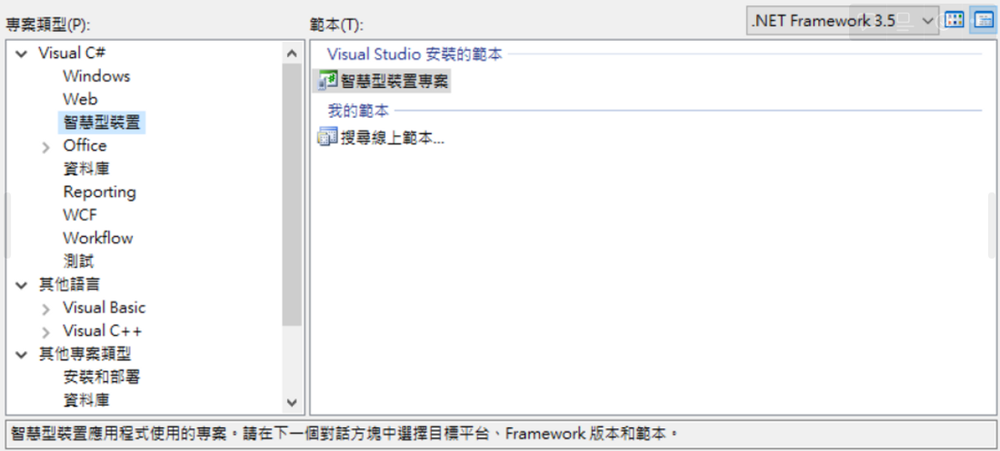
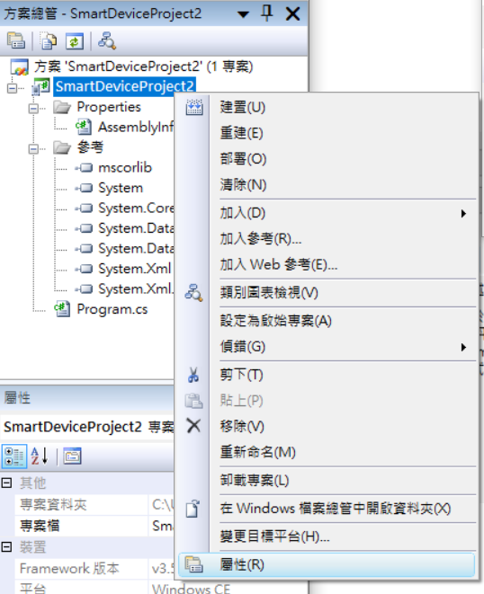
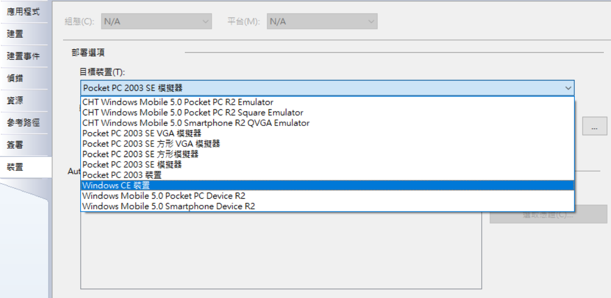

建置可以在Fanuc控制器上跑的c#專案
- 目標平台 選 Window CE
- 版本 .NET 3.5
- 範本 主控台應用程式
新建專案 → 智慧型裝置 → 智慧型裝置專案
方案總管 點選專案 右鍵點擊屬性
接著點選裝置→ 目標裝置 → Windows CE 裝置

選擇應用程式→ 輸出類型 → Windows 應用程式
建置成功後 新增一個Form結果會如下圖所示


目前是一位軟體工程師
目前是一位工作一年多的軟體工程師